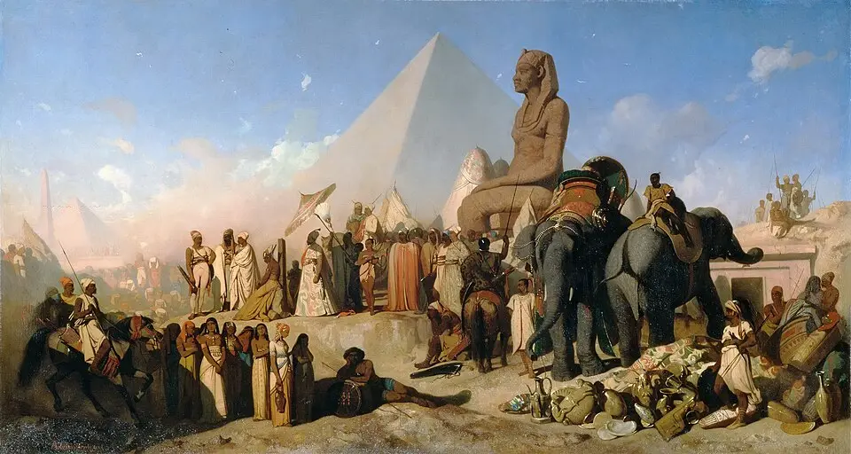
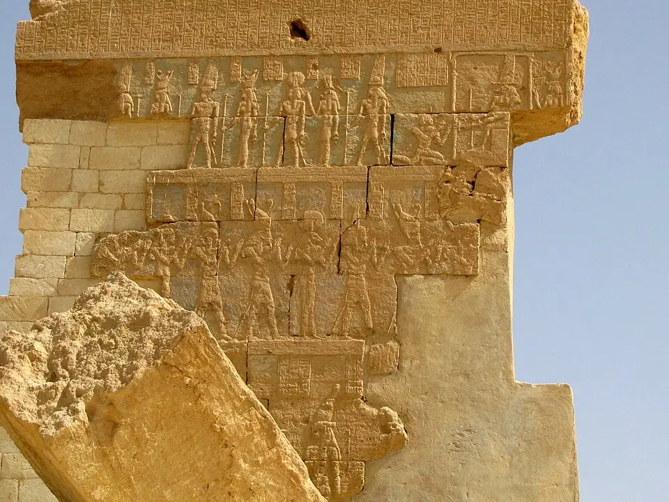
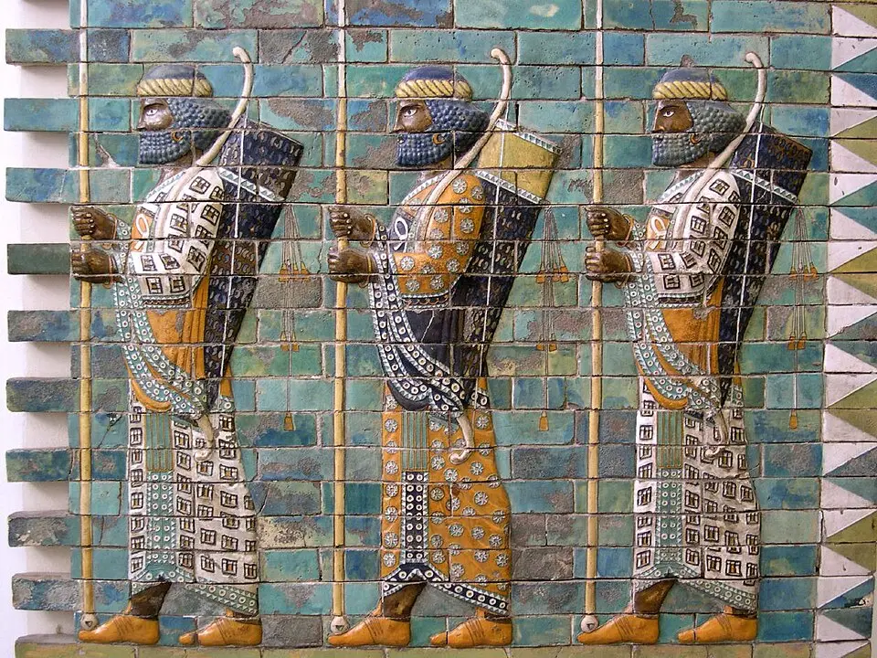
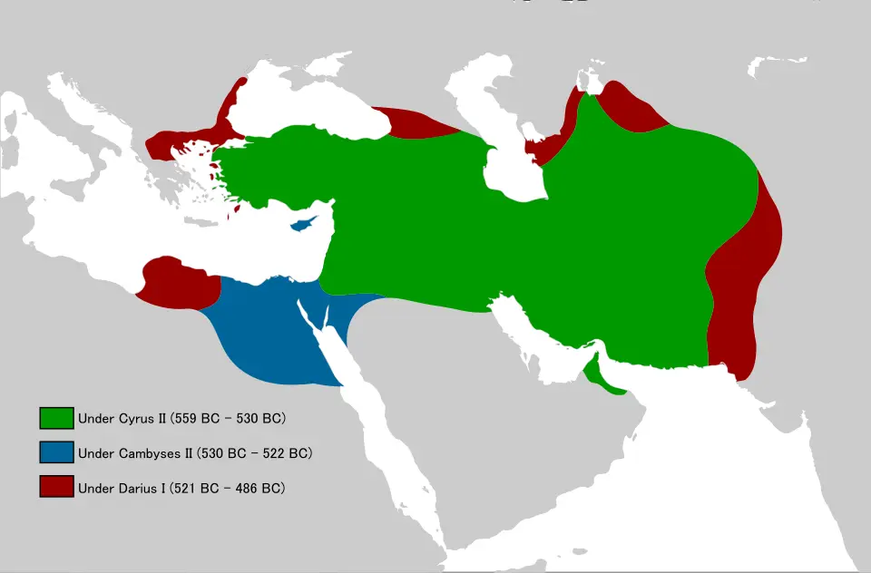

Đạo quân 50.000 người biến mất trong sa mạc
Theo Herodotus, 50.000 lính Ba Tư bị bão cát vùi giữa sa mạc Ai Cập. Hơn 2.500 năm sau, người ta vẫn tìm, và một nhà Ai Cập học cho rằng họ đã chết vì một lý do khác.

Tháng 2 năm 1984, nhà báo Mỹ Gary Chafetz trở về Cairo sau sáu tháng lùng sục những đụn cát ở biên giới Ai Cập và Libya. Ông bị bắt ngay, vì tội "buôn lậu máy bay vào Ai Cập", dù có giấy phép mang theo chiếc máy bay siêu nhẹ dùng để khảo sát. Ông được thả sau 24 giờ thẩm vấn, với điều kiện "tặng" chiếc máy bay cho chính phủ. Thứ ông đi tìm là một đạo quân 50.000 người đã biến mất từ thế kỷ 6 TCN.
Đi được nửa đường qua sa mạc phía Tây, toàn bộ đạo quân bị một trận bão cát chôn vùi, và không ai còn nghe tin về họ nữa.
Câu chuyện của Herodotus
Năm 525 TCN, vua Cambyses II nhà Achaemenid chinh phục Ai Cập. Theo Herodotus, trong cuốn Sử ký quyển 3, đoạn 26, Cambyses sau đó sai 50.000 quân đi uy hiếp đền sấm của thần Amun ở ốc đảo Siwa. Gần hai thế kỷ sau, chính đền sấm này được cho là đã công nhận Alexander Đại đế là pharaoh chính danh. Đi được nửa đường qua sa mạc phía Tây, toàn bộ đạo quân bị một trận bão cát chôn vùi, và không ai còn nghe tin về họ nữa.
Herodotus cũng kể rằng chiến dịch của Cambyses đánh xứ Kush ở phía nam kết thúc trong thảm họa, và đổ cho sự "điên rồ" của nhà vua, người đã xuất quân mà không lo lương thực. Ông viết vài thập kỷ sau các sự kiện này. Chỉ một đoạn văn ấy đã đủ để nhiều thế hệ nhà thám hiểm lên đường.
Gần một thế kỷ tìm kiếm


Nhiều người đã đi tìm. Nhà thám hiểm người Hungary László Almásy, nguyên mẫu của tiểu thuyết Bệnh nhân người Anh (1992), là một trong số đó. Tháng 1 năm 1933, sĩ quan Anh Orde Wingate cũng tìm mà không thấy gì.
Đoàn của Chafetz, từ tháng 9 năm 1983 đến tháng 2 năm 1984, được Đại học Harvard và Hội Địa lý Quốc gia Mỹ tài trợ. Họ có 20 nhà địa chất và công nhân Ai Cập, ba con lạc đà, một máy bay siêu nhẹ và radar xuyên đất, với kinh phí 250.000 đô la. Họ tìm thấy khoảng 500 gò mộ nhưng không có hiện vật nào. Một số gò có mảnh xương, nhưng phương pháp nhiệt phát quang cho niên đại khoảng 1500 TCN, sớm hơn đạo quân cả nghìn năm.
Năm 2000, một nhóm địa chất của Đại học Helwan đi tìm dầu và báo đã thấy mảnh vải, mảnh kim loại giống vũ khí và hài cốt. Hội đồng Cổ vật Tối cao Ai Cập hứa điều tra, rồi không công bố gì thêm. Tháng 11 năm 2009, hai anh em người Ý Angelo và Alfredo Castiglioni tuyên bố tìm thấy hài cốt, vũ khí, một vòng tay bạc và hoa tai gần Siwa. Nhưng chưa phát hiện nào đứng vững trước giới khoa học.
Bằng chứng nói gì


Đến nay, nguồn duy nhất về trận bão cát vẫn là Herodotus. Nhiều nhà Ai Cập học coi câu chuyện là ngụy tác. Sử gia Pierre Briant cho rằng định kiến rõ rệt của Herodotus đối với Cambyses khiến lời kể của ông đáng ngờ, và các nguồn khác không cho thấy quân Ba Tư gặp thảm họa nào như vậy.
Phát hiện năm 2009 cũng không đứng vững. Anh em Castiglioni công bố trong một phim tài liệu, không phải trên tạp chí khoa học. Họ vốn là hai nhà làm phim nổi tiếng với loạt phim "shockumentary" gây tranh cãi về châu Phi những năm 1970. Zahi Hawass, Tổng thư ký Hội đồng Cổ vật Tối cao Ai Cập, tuyên bố các tin này "không có cơ sở và gây hiểu lầm", vì hai người chưa từng được cấp phép khai quật.
Năm 2015, nhà Ai Cập học Olaf Kaper của Đại học Leiden đưa ra một cách giải thích khác. Khi khai quật ở Amheida, ốc đảo Dakhla, đoàn của ông tìm thấy các khối đá từ một đền thờ thần Thoth bị phá hủy, khắc gần đủ tước hiệu hoàng gia của Petubastis III, một thủ lĩnh Ai Cập nổi dậy chống Ba Tư. Kaper cho rằng đạo quân không chết vì bão cát, mà bị Petubastis phục kích và tiêu diệt. Nếu Kaper đúng, câu hỏi tiếp theo là: ai đã kể ra chuyện bão cát?
Một lời nói dối của người chiến thắng?


Petubastis có thể đã xưng pharaoh ở Memphis khoảng năm 522 TCN, nhân lúc ngai vàng Ba Tư rối loạn sau cái chết của Cambyses. Ông bị Darius I đánh bại. Theo giả thuyết của Kaper, Darius đã xóa dấu vết về kẻ nổi loạn, kể cả ngôi đền ở Amheida, và có thể chính ông tung ra chuyện bão cát để không ai nhớ rằng quân Ba Tư từng thua một pharaoh địa phương. Sau đó Darius cho xây nhiều công trình ở các ốc đảo phía tây, nổi tiếng nhất là đền Hibis ở ốc đảo Kharga.
Đây vẫn là giả thuyết. Nó giải thích được vì sao không ai tìm thấy xác 50.000 người dưới cát, nhưng chưa có văn bản nào nói thẳng về trận phục kích.
Dư âm đến hôm nay
Chiếc máy bay siêu nhẹ của Chafetz nay nằm trong Bảo tàng Chiến tranh Ai Cập ở Cairo, kèm chú thích rằng nó là của một điệp viên Israel. Đạo quân mất tích thì sống tiếp trong tiểu thuyết Biggles Flies South của W. E. Johns và trò chơi điện tử Assassin's Creed Origins.
Cuộc chinh phục Ai Cập của Cambyses là có thật; còn đạo quân 50.000 người biến mất trong bão cát, đến nay, vẫn chỉ có một nhân chứng là Herodotus.